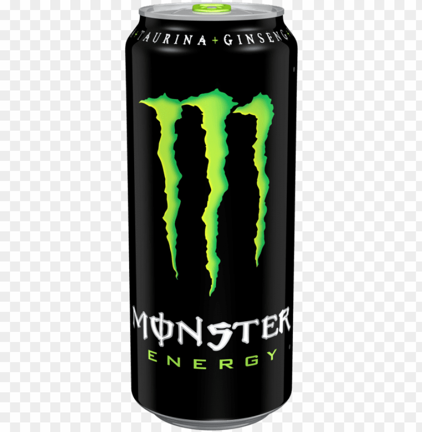

Pros: It has a cool can tab color (neon green)
Cons: Tastes like battery acid mixed with stomach acid;

Pros: It has a cool can tab color (bright red); it manages to taste like cherry without being overpowering like most cherry flavors; it's "optimized and fortified by [their] battle-tested...blend", which is pretty cool
Cons: Cringy word choice (they "dig" the camo); it's refusal to take a political stance is cowardly (since they "don't get too hung up on politics" to appeal to the most consumers)